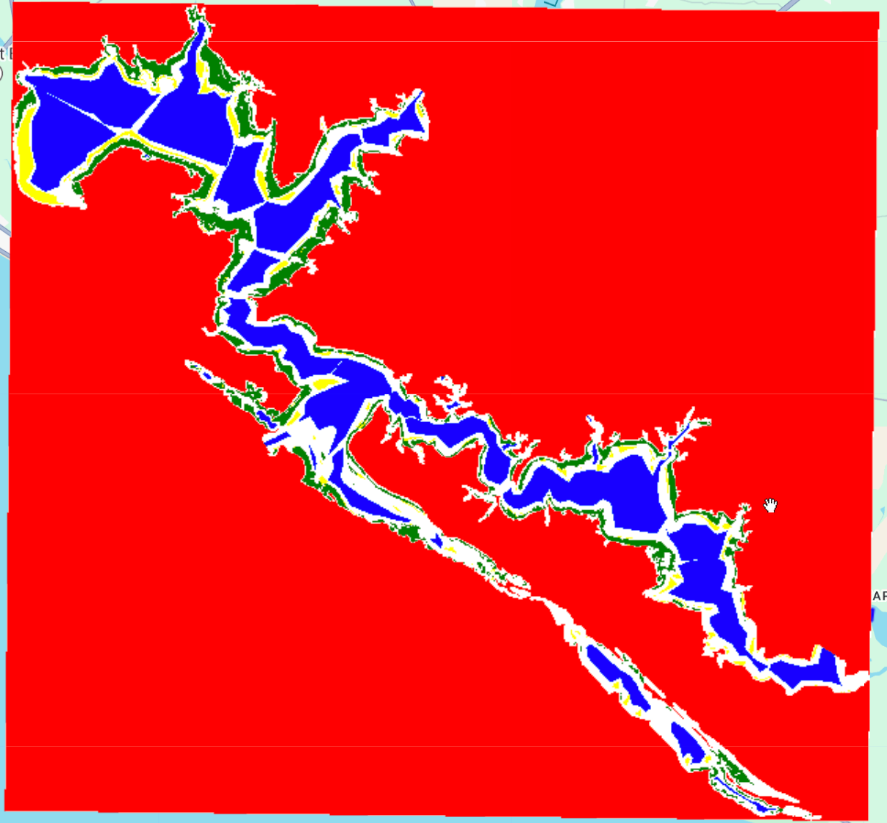
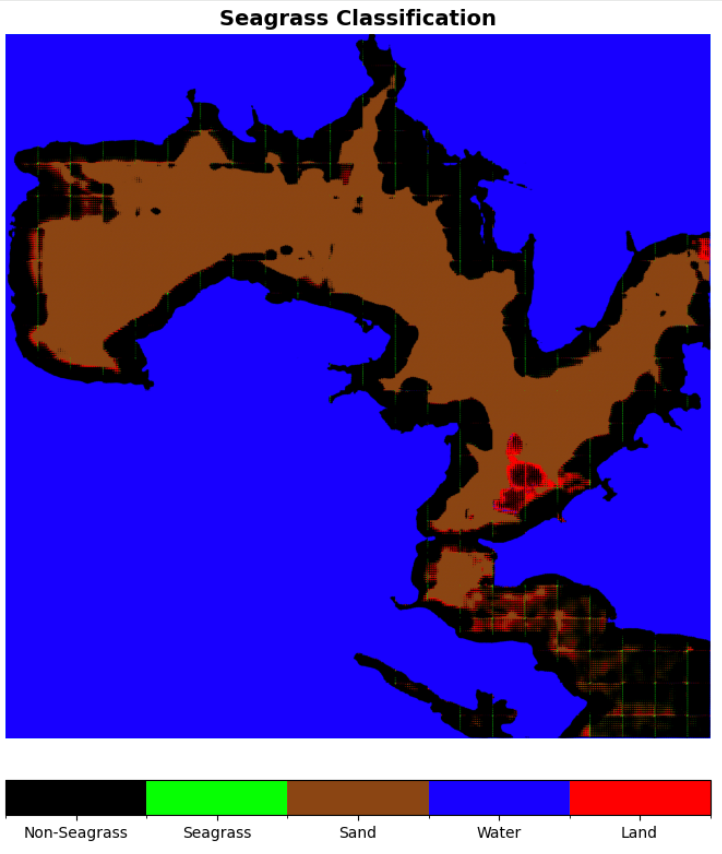
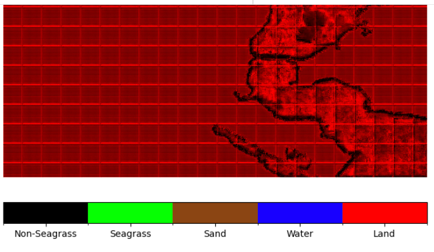

An attempt to fine-tune Prithvi-EO using IMaRS SIMM project seagrass maps.
This work is based on this Prithvi-EO notebook.
Background
The SIMM Seagrass Project
From the SIMM Seagrass project two images are obtained of the St Andrew’s sound region.
- A seagrass classification .tif created using the mode of classifications on images taken throughout a year.
- A spectral mean .tif created using the same images used to generate classifications.
The aggregations use a total of 138 images covering 2022-2024, one aggregation is created for each year.
The 2024 year is selected for creating this dataset. The 2024 spectral mean image is built from 72 images. This image cannot be shared due to licensing restrictions.
The seagrass image can be downloaded here. From the SIMM Seagrass project two images are obtained of the St Andrew’s sound region.
- A seagrass classification .tif created using the mode of classifications on images taken throughout a year.
- A spectral median .tif created using all Planet SuperDove images (346 images).
The spectral mean image cannot be shared due to licensing restrictions. The GEE script to generate this image is here. This script will not work unless you have access to the (restricted) Planet SuperDove image collection asset.
The seagrass image for 2024 can be downloaded here. In addition to application of the seagrass classifier (GEE script available here), manal adjustments may have been made to improve the final product.
Create Training Dataset
The first training dataset created used Planet imagery, so the spectra do not align perfectly with Prithvi’s knowledge (based on Sentinel & Landsat). Later versions focused only on sentinel imagery.
The notebook expects input data for fine-tuning in the ../data/ directory. These files should be in pairs like:
- chip_025_082.mask.tif
- chip_025_082.merged.tif
The mask is the classification (seagrass yes/no). The merged file is the spectral bands.
Attempt (1) : Google Earth Engine
To create a fine-tuning dataset of patches, the GEE addSeagrass method developed for the SIMM Seagrass project along with the planet superdove imagery already ingested into GEE are used. The spectral images and the seagrass layer produced need to be cut into patches.
An initial attempt to create this script with ChatGPT (transcript here) failed.
An attempt to work with Claude to accomplish this (artifact here) ended in moderate success. Patches can be exported with one GEE task per patch in batches. This necessitates clicking run on every patch export. For a few 100 patches this is fine, but it is recommended to tune with a minimum of 1000 patches.
The python API allows automatic starting of tasks, but the generation of the seagrass maps is done in GEE javascript. The .tif outputs of these scripts can be used locally rather than using GEE to chunk up the images into patches.
Attempt (2) : Cutting patches with python
The SVM classification as described above should be annual_median_selectedBands_2024.tif.
The 8b image is expected to have 3 time-steps in the bands. Three multispectral images from three time points are expected, with bands in the _merged.tif files ordered like
[t0_b0, t0_b1, ..., t0_b7,
t1_b0, t1_b1, ..., t1_b7,
t2_b0, t2_b1, ..., t2_b7]A GEE script to create this image using three composite (median) images from for images from years 2023-2025 was created here The seasons were chosen using this ChatGPT query.
| Season | Months | Optical Regime | Seagrass Detectability | Recommended Use |
|---|---|---|---|---|
| High Attenuation | Jan–Apr | High CDOM + sediment | Poor | Avoid for benthic mapping |
| Transitional | May–early Jul | Mixed clarity | Moderate, variable | Supplemental / temporal fusion |
| Peak Visibility | Late Jul–Oct | Clear water, deep light | Excellent | Primary training & mapping |
| (Excluded / Variable) | Nov–Dec | Storm-driven variability | Unreliable | Use selectively |
The Nov-Dec period was excluded. The total images used for each seasonal composite are:
- High Attenuation (Jan-Apr) - Image count: 46
- Transitional (May-early Jul) - Image count: 10
- Peak Visibility (Late Jul-Oct) - Image count: 92
Based on visual interpretation of the true-color display, the seagrass areas appear to have different spectral signatures in the seagrass regions for each season. This added temporal information should increase the accuracy of the foundation model’s classification product.
The resulting images do have some artifacts; the lines between passes are noticeable.
The resulting export is saved as 9 shards because a single .tif would be too large. The download from gdrive comes in multiple parts because a single .zip would be too large. After unzipping each .zip, the files are put into a single directory and used with the extract_tuning_patches.py script.
Preparation of tuning patches was completed with this script.
The patches were then compressed (tar -cvjf data/seagrass_tuning_patches.tar.bz2 data/tuning_patches) and the compressed file was uploaded to Google Drive.
Fine-tuning and using the model
A jupyter notebook prithvi_v2_eo_300_tl_unet_seagrass.ipynb was created from the prithvi_v2_eo_300_tl_unet_multitemporal_crop.ipynb starting point. Modifications were made to :
- load the training dataset
- create relevant classes derived from Crop classification classes
- add required means and std_dev for each band. (see below)
- it is assumed these are calculated from patch chips.
- a script to do this calculation was created: calculate_chip_statistics.py
- apply model to an unseen image to create classification
Mean and Std_dev calculations for each band
The .ipynb expects mean and std_dev statistics for each band. I do not have a good understanding of what these statistics are and what purpose they serve in the .ipynb. It seems safe to assume they are for data normalization. The values being used are from a median image made from the year 2024. It is assumed that these values are not significantly different than if statistics were calculated on all 24 (8 spectral x 3 temporal) bands reduced across the temporal dimension into 8 statistics. The calculate_chip_statistics.py script could be updated to do this calculation. It is expected that the values would be very similar to the “legacy” values currently in the .ipynb.
Unseen Training Image
The aforementioned GEE script used to generate 3-time-step seasonal images was used with images for the year 2020. This is entirely unseen by the model (which was generated from a median taken 2023-2025).
The image is saved to google drive from the script, and the filepath is used in the .ipynb to download the image into the colab runtime.
The model is run on the image to produce a seagrass classification image.
Results & Improvements to the Model
v01
Initial results from the classifier are poor quality.

The classifier seems to be identifying water and non-water.
v02 : Added Land-Masking
To address this issue the input .tif images are cropped with a land-mask before use. This is applied to both the chip and the to-classify image.
The GEE image export script has been updated.
Running again after masking shows markedly improved results.

The model has now learned to identify shallow areas, but is not differentiating between sand and seagrass. As a side note: Prithvi might be good at creating bathymetry.
v03 : Addition of Sand and Water Classes
Current SIMM map is seagrass/non-seagrass only, but layers exist to highlight some areas of sand and deep water. For tuning the foundation model it is okay that not all sand&&water is identified. The sand and water polygons were added to the final seagrass image to create a new product, the SIMM-classes-product. This GEE script was created for this task.

Note that this image shows actual cover of seagrass and example locations of water and sand; all sand&&water is not marked. For this application completeness matters far less than correctness.
This four-class image is now used as the _mask product for tuning the classifier.
The resulting image is terrible.

Two potential explainations for the poor quality of this result are:
- The multi-class boundary was much harder for the model to learn than seagrass/non-seagrass
- The areas marked sand/water were not good representative samples of pure sand/water.
v04 : Addition of land class
A second attempt was made to use multi-class classification. This time an additional class is introduced ‘4’ for ‘land’.

The before linked imars-simm:export_combined_classification_product_for_prithvi script has been updated.
Tuning patches have been re-extracted using this new file and the masked 8b x 3-time-step means product. The new chips were compressed and uploaded to gdrive. Statistics were not re-calculated; the mean image has not changed since last calculation.
The tuning and classification script was run again.

The result is again confusingly poor.
v05 : Switch to using Sentinel Imagery
Perhaps it is the usage of Planet SuperDove imagery that is causing issues. We attempt to use sentinel imagery only to create a map.
Because sentinel 2 has more images we reduce to using 2024 only.
High Attenuation (Jan-Apr) - Image count:
23
Transitional (May-early Jul) - Image count:
15
Peak Visibility (Late Jul-Oct) - Image count:
22The number of valid patches drops significantly due to the lower resolution of the S2 product:
(base) tylar@tylar-laptop:~/repos/nasa-prithvi-wetlands$ python py/extract_tuning_patches.py
Detected single TIF file: data/seasonal_s2_stack.tif
============================================================
Processing spectral file 1/1: seasonal_s2_stack.tif
============================================================
CRS mismatch detected: EPSG:4326 vs EPSG:3746
Reprojecting mask to match spectral image...
Mask reprojected to match spectral image: (1306, 1585)
Extracting 224x224 patches with stride 224
Number of spectral bands: 24
Will extract up to 35 patches from this shard
Shard complete: 22 valid patches extracted
============================================================
Extraction complete!
============================================================
Spectral files processed: 1
Valid patches saved: 22
Patches skipped: 13
Output directory: data/tuning_patches
Organizing patches into training and validation sets...
Dataset split created:
Training samples: 18
- Files in: data/tuning_patches/training_chips
- List file: training_data.txt
Validation samples: 4
- Files in: data/tuning_patches/validation_chips
- List file: validation_data.txt
Chip naming format:
- Spectral: chip_XXXXX_merged.tif
- Mask: chip_XXXXX.mask.tif
Cleaning up temporary directories...
- Removed: data/tuning_patches/spectral
- Removed: data/tuning_patches/masks
✓ Cleanup complete!
✓ Patch extraction complete! Ready for Prithvi fine-tuning.!!! PROBLEM DISCOVERED IN PIPELINE !!!
This issue may affect previous versions. The tuning_patches directory is not cleared with each run. Chips existing in the directory before the script is run will be included in the compressed chip file.
This may have affected previous multi-class extractions. I am not certain if I manually cleared the tuning_patches directory. The extract_tuning_patches.py script has been updated to clear the directory. ——————
The patches are zipped and uploaded to GDrive.
The notebook is re-run.

No good.
Simplify to 2-class and Sentinel-2 only imagery
The pipeline was simplified to identify root cause of poor model performance. A new research notebook was created.
The number of seagrass classes is returned to 2 (seagrass, other). The input imagery being used will be derived from sentinel 2 (rather than planet superdove).
New Spectral Images
New spectral images are prepared with GEE users/tylarmurray/prithvi:prithvi_s2_median_tif_collection1.
for 2020:
High Attenuation (Jan-Apr) - Image count:
72
Transitional (May-early Jul) - Image count:
44
Peak Visibility (Late Jul-Oct) - Image count:
67and for 2024:
High Attenuation (Jan-Apr) - Image count:
74
Transitional (May-early Jul) - Image count:
49
Peak Visibility (Late Jul-Oct) - Image count:
72New Tuning Patch-Set
New tuning patches were extracted from the 2023-2025 median image and the SIMM seagrass map.
(base) tylar@tylar-laptop:~/repos/nasa-prithvi-wetlands$ python scripts/extract_tuning_patches_seagrass_2class_sentinel2.py
Clearing existing output directory: data/output/tuning_patches
Detected single TIF file: data/input/spectral/stAndrews_seasonal_s2_stack_2023_to_2025.tif
============================================================
Processing spectral file 1/1: stAndrews_seasonal_s2_stack_2023_to_2025.tif
============================================================
CRS mismatch detected: EPSG:4326 vs EPSG:3746
Reprojecting mask to match spectral image...
Mask reprojected to match spectral image: (1306, 1585)
Extracting 224x224 patches with stride 224
Number of spectral bands: 24
Will extract up to 35 patches from this shard
Shard complete: 22 valid patches extracted
============================================================
Extraction complete!
============================================================
Spectral files processed: 1
Valid patches saved: 22
Patches skipped: 13
Output directory: data/output/tuning_patches
Organizing patches into training and validation sets...
Dataset split created:
Training samples: 18
- Files in: data/output/tuning_patches/training_chips
- List file: training_data.txt
Validation samples: 4
- Files in: data/output/tuning_patches/validation_chips
- List file: validation_data.txt
Chip naming format:
- Spectral: chip_XXXXX_merged.tif
- Mask: chip_XXXXX.mask.tif
Cleaning up temporary directories...
- Removed: data/output/tuning_patches/spectral
- Removed: data/output/tuning_patches/masks
✓ Cleanup complete!
✓ Patch extraction complete! Ready for Prithvi fine-tuning.
Compressing tuning patches...
✓ Compressed patches saved to: data/output/stAndrews_seagrass_tuning_patches.tar.bz2NOTE: This number of tuning samples may be too low for tuning to be effective.
Results

The result shows artifacts at the boundaries of processing tiling. The model is identifying areas nearby to masked areas as likely seagrass.
A comparison with an un-land-masked image is needed.
For this comparison see this post
TODO: Band Selection
Addition of ratio bands and bands with temporal components may be useful for the model. The following are considered for addition:
- Ratio Medians For Cleaner Signals
- Turbidity Proxy Blue/Green Median & Variance
- coastal/green
- green I / green II
- log(Blue / Green)
- Variances for Temporal Stability Discrimination
- Green
- Blue/Green
- Max-min for Temporal Change Magnitude Discrimination
- Green
In addition, the NIR and RedEdge could be dropped, as these are likely not useful for underwater cover. Although the NIR may be useful for differentiating water vs land.
These modifications should be made to the GEE exporting script so that the new selection of bands will be exported rather than the 8 medians. Because there are 3 time-steps included, the total number of bands will be the number of per-aggregation bands times 3.
TODO: attempt without landmask on median
Perhaps the land-masked median image is causing issues. We attempt to run the classifier with a full image.
TODO: Per-Chip Normalization
To remove the ability of the model to learn on brightness alone, the chips can be normalized independently. Because the overall scene brightness characteristics are removed, the model is forced to focus on texture and shape.